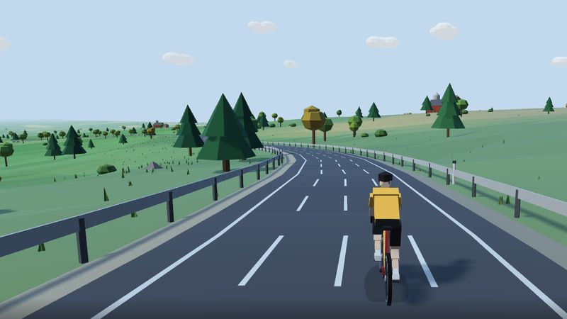

GOCARMO Ride
Ciclismo indoor no browser: ligas um rolo inteligente por Bluetooth, ou experimentas sem bicicleta.Indoor cycling in the browser: connect a smart trainer over Bluetooth, or try it without a bike.
O jogoThe game

Do que precisasWhat you need
-
Com roloWith a trainer
Chrome ou Edge, em Windows, macOS, ChromeOS ou Android, para ligares um rolo inteligente por Bluetooth.Chrome or Edge, on Windows, macOS, ChromeOS or Android, to connect a smart trainer over Bluetooth.
-
iPhone e iPadiPhone and iPad
No iPhone e no iPad, o browser não consegue ligar um rolo por Bluetooth. O Safari e o Firefox também não, em nenhum aparelho. Nesses casos pedalas sem bicicleta, com as patilhas no telemóvel, ou usas o simulador.On iPhone and iPad, the browser cannot connect a trainer over Bluetooth. Neither can Safari or Firefox, on any device. In those cases you ride without a bike, with the phone paddles, or use the simulator.
-
Os teus dadosYour details
Um nome, o teu peso e o teu FTP. Preenches os três no ecrã inicial e ficam guardados no teu browser. O servidor do jogo recebe-os quando começas a pedalar, e os outros ciclistas veem o teu nome. Enquanto pedalas, recebe também a tua potência e a tua cadência.A name, your weight and your FTP. You enter all three on the start screen and they stay saved in your browser. The game server receives them when you start to ride, and other riders see your name. While you ride it also receives your power and cadence.
O GOCARMO Ride é uma versão modificada do OpenRadlr, © The OpenRadlr contributors. É software livre, sob a licença GNU AGPL, versão 3 ou posterior. Não é o OpenRadlr oficial nem tem ligação aos seus autores.GOCARMO Ride is a modified version of OpenRadlr, © The OpenRadlr contributors. It is free software under the GNU AGPL, version 3 or later. It is not the official OpenRadlr and is not affiliated with its authors. Código-fonteSource code (abre noutro separador) · Projeto originalOriginal project (abre noutro separador)